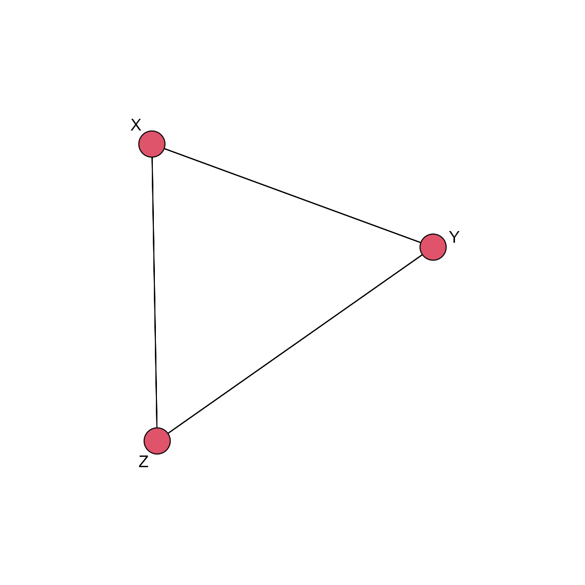
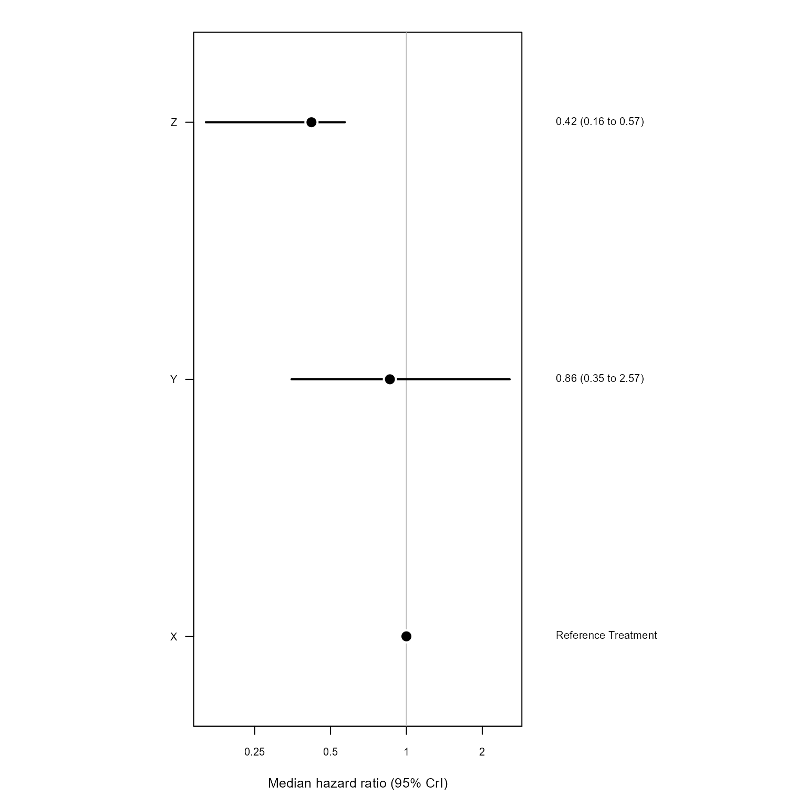

How to use NMA: Introduction with test data
Source:vignettes/how-to-use-nma-test-data.Rmd
how-to-use-nma-test-data.RmdIntroduction
This document describes how to use the main functions of
NMA to run a single network meta-analysis.
Example
First load the required packages.
Settings
Define the BUGS parameters for MCMC. This is not necessary, but recommended, because there are default values for these.
bugs_params <-
list(
PROG = "openBugs", # which version of BUGS to use to run the MCMC
N.BURNIN = 10,#00, # number of steps to throw away
N.SIMS = 150,#0, # total number of simulations
N.CHAINS = 2, # number of chains
N.THIN = 1, # thinning rate
PAUSE = TRUE)Define the scenario we will use for the analysis.
RANDOM <- FALSE # is this a random effects model?
REFTX <- "X" # reference treatment
is_bin <- TRUE # include binary data?
is_med <- TRUE # include median data?
label_name <- "label_name"Read in datasets
The trials data consist of up to 3 separate data frames. A main
table, subData, and optional tables for median event time
and binary data, subDataMed and subDataBin
respectively. Lets read in the each data set separately. In another
article we will show how to do this in one function call by including a
Reference file in the data folder which contains the meta data
of how to read in the study data. If there is no binary or median data
used in the NMA then the variables subDataBin and
subDataMed are assigned NA.
file_name <- here::here(file.path("raw_data", "survdata_"))
subData <-
read.csv(paste0(file_name, "main_test.csv"),
header = TRUE,
as.is = TRUE)
subDataBin <-
if (is_bin) {
read.csv(paste0(file_name, "bin_test.csv"),
header = TRUE,
as.is = TRUE)
} else {NA}
subDataMed <-
if (is_med) {
read.csv(paste0(file_name, "med_test.csv"),
header = TRUE,
as.is = TRUE) %>%
mutate(medR = floor(medR))
} else {NA}Build model
Now we can create the NMA object to use in the modelling. The workflow is to first create this separately to actually doing the fitting. This then means that we can perform modified fits but we don’t have to redo any of the preparatory work.
nma_model <-
new_NMA(subData = subData,
subDataMed = subDataMed,
subDataBin = subDataBin,
bugs_params = bugs_params,
is_random = RANDOM,
refTx = REFTX ,
effectParam = "beta",
modelParams = "totresdev",
label = "",
endpoint = "")
nma_model
#> $dat
#> $dat$inits
#> function() {
#> list(
#> beta = c(NA, rnorm(nTx - 1, 0, 2)),
#> sd = 0.1,
#> alpha = rnorm(nStudies)) %>%
#> .[param_names]
#> }
#> <bytecode: 0x0000000013ac5430>
#> <environment: 0x00000000138f9cc0>
#>
#> $dat$subData
#> study base tx Lmean Lse multi_arm Ltx Lbase Lstudy
#> 1 A X Y -0.5259393 0.1275307 0 2 1 1
#> 2 B Y Z -0.7133499 0.1437422 0 3 2 2
#> 3 C Z X -0.3011051 0.1758496 0 1 3 3
#>
#> $dat$subDataBin
#> study base tx BinR BinN Btx Bbase Bstudy
#> 1 A X X 34 38 1 1 1
#> 2 B X Y 27 33 2 1 2
#>
#> $dat$subDataMed
#> study base tx median medN medR mediantx medianbase medianstudy
#> 1 A X Y 14.0 45 22 2 1 1
#> 2 B Y Z 18.0 45 22 3 2 2
#> 3 C Z X 15.1 10 5 1 3 3
#>
#> $dat$bugsData
#> $dat$bugsData$mu_beta
#> [1] 0
#>
#> $dat$bugsData$prec_beta
#> [1] 1e-06
#>
#> $dat$bugsData$mu_alpha
#> [1] 0
#>
#> $dat$bugsData$prec_alpha
#> [1] 1e-06
#>
#> $dat$bugsData$Lstudy
#> [1] 1 2 3
#>
#> $dat$bugsData$Ltx
#> [1] 2 3 1
#>
#> $dat$bugsData$Lbase
#> [1] 1 2 3
#>
#> $dat$bugsData$Lmean
#> [1] -0.5259393 -0.7133499 -0.3011051
#>
#> $dat$bugsData$Lse
#> [1] 0.1275307 0.1437422 0.1758496
#>
#> $dat$bugsData$multi
#> [1] 0 0 0
#>
#> $dat$bugsData$LnObs
#> [1] 3
#>
#> $dat$bugsData$nTx
#> [1] 3
#>
#> $dat$bugsData$nStudies
#> [1] 3
#>
#> $dat$bugsData$medianStudy
#> [1] 1 2 3
#>
#> $dat$bugsData$medianTx
#> [1] 2 3 1
#>
#> $dat$bugsData$medianBase
#> [1] 1 2 3
#>
#> $dat$bugsData$Bstudy
#> [1] 1 2
#>
#> $dat$bugsData$Btx
#> [1] 1 2
#>
#> $dat$bugsData$Bbase
#> [1] 1 1
#>
#> $dat$bugsData$medianN
#> [1] 45 45 10
#>
#> $dat$bugsData$medianR
#> [1] 22 22 5
#>
#> $dat$bugsData$median
#> [1] 14.0 18.0 15.1
#>
#> $dat$bugsData$medianNObs
#> [1] 3
#>
#> $dat$bugsData$Bn
#> [1] 38 33
#>
#> $dat$bugsData$Br
#> [1] 34 27
#>
#> $dat$bugsData$BnObs
#> [1] 2
#>
#>
#> $dat$txList
#> [1] "X" "Y" "Z"
#>
#>
#> $is_med
#> [1] TRUE
#>
#> $is_bin
#> [1] TRUE
#>
#> $bugs_params
#> $bugs_params$PROG
#> [1] "openBugs"
#>
#> $bugs_params$N.BURNIN
#> [1] 10
#>
#> $bugs_params$N.SIMS
#> [1] 150
#>
#> $bugs_params$N.CHAINS
#> [1] 2
#>
#> $bugs_params$N.THIN
#> [1] 1
#>
#> $bugs_params$PAUSE
#> [1] TRUE
#>
#> $bugs_params$run_bugs
#> [1] TRUE
#>
#>
#> $bugs_fn
#> function(...)
#> R2OpenBUGS::bugs(...)
#> <bytecode: 0x000000001fb74f28>
#> <environment: 0x000000001fb78f98>
#>
#> $is_random
#> [1] FALSE
#>
#> $refTx
#> [1] "X"
#>
#> $effectParam
#> [1] "beta"
#>
#> $modelParams
#> [1] "totresdev"
#>
#> $label
#> [1] ""
#>
#> $endpoint
#> [1] ""
#>
#> attr(,"class")
#> [1] "nma"
#> attr(,"CALL")
#> attr(,"CALL")$subData
#> subData
#>
#> attr(,"CALL")$subDataMed
#> subDataMed
#>
#> attr(,"CALL")$subDataBin
#> subDataBin
#>
#> attr(,"CALL")$bugs_params
#> bugs_params
#>
#> attr(,"CALL")$is_random
#> RANDOM
#>
#> attr(,"CALL")$refTx
#> REFTX
#>
#> attr(,"CALL")$effectParam
#> [1] "beta"
#>
#> attr(,"CALL")$modelParams
#> [1] "totresdev"
#>
#> attr(,"CALL")$label
#> [1] ""
#>
#> attr(,"CALL")$endpoint
#> [1] ""We can view the network graph.
library(sna)
plotNetwork(nma_model)
Run MCMC
The NMA MCMC function calls the appropriate BUGS model.
nma_res <- NMA_run(nma_model, save = FALSE)
#> ====== RUNNING BUGS MODEL
nma_res
#> Inference for Bugs model at "C:/Users/Nathan/Documents/R/NMA/inst/FE_med_bin.txt",
#> 2 chains, each with 160 iterations (first 10 discarded)
#> n.sims = 300 iterations saved
#> mean sd 2.5% 25% 50% 75% 97.5% Rhat n.eff
#> beta[2] -0.1 0.7 -1.0 -0.8 -0.2 0.7 0.9 3.4 3
#> beta[3] -1.0 0.4 -1.8 -1.3 -0.9 -0.8 -0.6 1.5 6
#> totresdev 270.0 155.6 76.7 119.0 250.2 412.1 540.9 1.6 5
#> deviance 421.7 116.3 292.2 312.5 407.6 533.1 633.8 1.7 5
#>
#> For each parameter, n.eff is a crude measure of effective sample size,
#> and Rhat is the potential scale reduction factor (at convergence, Rhat=1).
#>
#> DIC info (using the rule, pD = Dbar-Dhat)
#> pD = 90.5 and DIC = 512.2
#> DIC is an estimate of expected predictive error (lower deviance is better).Reconfigure model
It is simple to modify an existing analysis without repeating the previous steps. For example, we can run the NMA for a random effects rather than a fixed effects model version of the same model.
nma_model2 <-
NMA_update(nma_model,
is_random = TRUE)
nma_res2 <- NMA_run(nma_model2, save = FALSE)
#> ====== RUNNING BUGS MODEL
nma_res2
#> Inference for Bugs model at "C:/Users/Nathan/Documents/R/NMA/inst/RE_med_bin.txt",
#> 2 chains, each with 160 iterations (first 10 discarded)
#> n.sims = 300 iterations saved
#> mean sd 2.5% 25% 50% 75% 97.5% Rhat n.eff
#> beta[2] -0.9 0.6 -1.9 -1.5 -1.1 -0.2 0.0 3.8 2
#> beta[3] 0.4 2.0 -2.5 -1.3 -0.5 2.5 3.4 4.9 2
#> totresdev 190.3 127.1 56.3 81.6 198.2 257.8 438.0 3.2 3
#> deviance 227.9 117.9 118.4 132.7 231.3 282.1 470.8 2.7 3
#>
#> For each parameter, n.eff is a crude measure of effective sample size,
#> and Rhat is the potential scale reduction factor (at convergence, Rhat=1).
#>
#> DIC info (using the rule, pD = Dbar-Dhat)
#> pD = 44.4 and DIC = 272.3
#> DIC is an estimate of expected predictive error (lower deviance is better).Plot and tables
BUGS plots are available for diagnosing the performance.
diagnostics(nma_res2, save = TRUE)Different NMA tables can be created. They can provide a record of the analysis.
write_data_to_file(nma_model)
write_results_table(nma_model, nma_res)
pairwiseTable(nma_model, nma_res)
#> X Y Z
#> X "1 (1,1)" "1.17 (0.39,2.83)" "2.39 (1.75,6.15)"
#> Y "0.86 (0.35,2.57)" "1 (1,1)" "2.24 (1.28,5.44)"
#> Z "0.42 (0.16,0.57)" "0.45 (0.18,0.78)" "1 (1,1)"Currently available NMA plots are a treatment effect forest plot of posterior samples and a rank probability grid.
txEffectPlot(nma_model, nma_res)
rankProbPlot(nma_model, nma_res)It’s also possible to create all of the BUGS and output plots and table functions together and write to an analysis folder.
nma_outputs(nma_res2, save = TRUE)